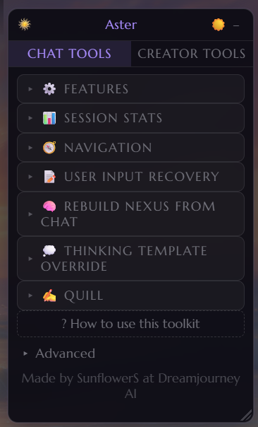
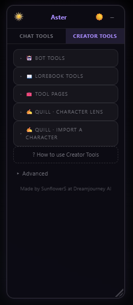
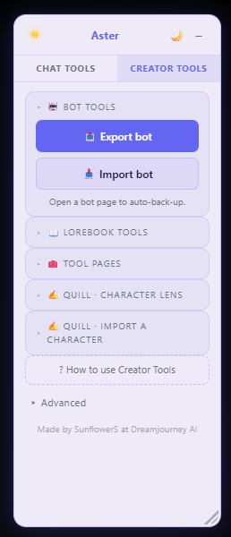
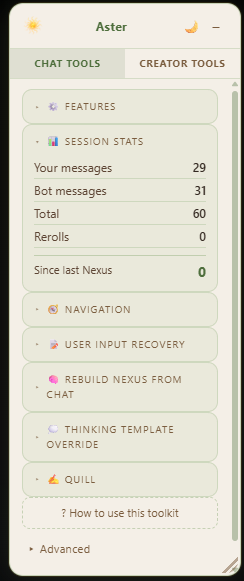
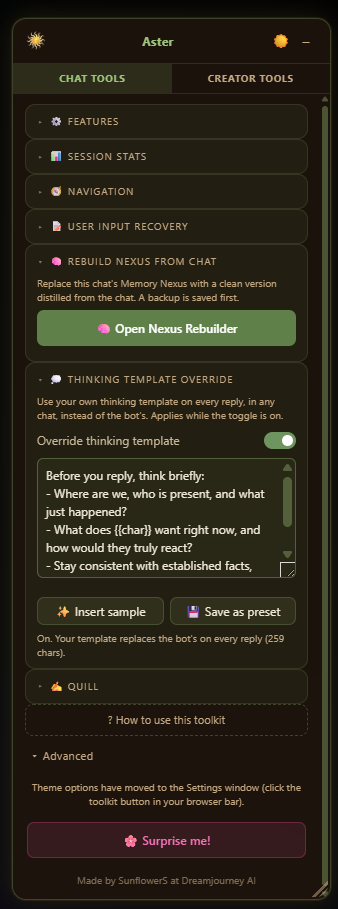

Aster
In Action





Hello again! I wasn't going to keep updating this beyond fixes, but my nexus broke in the middle of a 300 message chat and it would take me too long to manually fix it, so here we go. I know Rishi is working on replaceable thinking, but I couldn't wait any longer; I don't personally vibe with a lot of the popular thinking prompts used right now, sooo... here u go lol! 🤣
It's now fully customisable—you can hide the tools you won't use so they're not taking up space in the popup. You can edit all this in the toolkit settings, which you access from the icon in your browser toolbar. There's two colour themes, and light and dark mode for each, so hopefully easy on everyone's eyes. It's also now scalable, so you can make it smaller and scroll, or make it huge, up to you! If there are any accessibility issues I've missed, please let me know!
🆕 What’s New
Version 3.3
🔒 Lock all imported memories
When you rebuild a chat’s Nexus, Aster now locks every imported memory so DreamJourney’s auto-Nexus can’t overwrite or delete them. It’s on by default, so a fresh import comes in fully pinned. Restoring a backup keeps each memory’s lock state too.
🙈 Hide from AI
Hide a single message from the AI’s context in a chat, like a bugged duplicate you can’t delete, without actually removing it. It collapses to a small bar and gets stripped from what the model sees, until it scrolls out of context on its own.
💭 Per-chat thinking templates
The Thinking Template Override is now saved per chat. Each chat remembers its own and loads it automatically when you switch, and you can still save favourites as presets.
🔄 Check for updates
A link at the bottom of the panel shows your installed version and brings you here to grab the latest.
Version 3.0
🧠 Rebuild Nexus from Chat
Replace a chat’s Memory Nexus (the bot’s long-term memory) with a clean version distilled from the actual conversation. DreamJourney’s automatic memory drifts over time: it bloats, duplicates entities, and gets events wrong. Now you can fix it wholesale.
- Download your chat, hand it to your favourite LLM with the built-in prompt (one-click “Copy the LLM prompt”), then paste the JSON it returns back in.
- Preview exactly what will be written before anything changes.
- Replace the whole Nexus in one click.
- The old Nexus is backed up first, with one-click “Restore a backup” to roll back at any time.
- Works on long chats: if the transcript is bigger than your LLM’s context window, split it into chunks, run each, and combine the results before pasting.
💭 Thinking Template Override
Use your own thinking template on every reply, in any chat, instead of the bot’s built-in one, handy for steering how thinking models reason.
- Toggle it on, paste your template, and it applies to every message you send.
- Save your favourite templates as named presets and reload them anytime.
✒️ Quill
Quill is a tool powered by an LLM of your choice. If you have local models or API keys, you can link your favourite model up to Quill and use it to assist you and enhance your chats or troubleshoot your bots. The output here will vary massively on whatever model you have attached to Quill. Please fully read the link within the description before trying to use Quill.
💬 Chat Tools
- 📊 Stats — Tracks your message counts and rerolls per chat; your messages, the bot's, and individual rerolls as separate stats. This works on the currently loaded chats, so to keep it accurate and get the full figures, use the scroll to top button at least once!
- 🔮 Nexus Reminder — Shows how many messages have passed since the last time you checked your Nexus. Turns orange then red as you get further from it, with a warning when it's time to check in. The Nexus part you can ignore completely if you're not someone who checks the Nexus a lot, but if it bothers you when there are duplicates/false entries, it's a good reminder to check in.
- 🔄 Save regenerations — Saves previous bot replies before they disappear when you regen/reroll. Browse them in the panel and swap one back in with one click.
- ✏️ User Input Recovery — Autosaves what you're typing so a crash or timeout won't lose your message, even if you were mid word. Also keeps your last 5 sent messages, so if Stop Generation deletes your message, you can grab it back. We should be safe with this thanks to Rishi's additional copy button on previous messages, but I left it in just in case! 💜
- 🛑 Auto-refresh on Stop — Stopping mid-generation can result in duplicate or missing messages. This gives you a 3-second countdown to refresh the page and clear the error. Cancel it if you need to copy something first (though if you have the Input Recovery switched on, your last message should already be saved in the extension!).
- 🧠 Delete Thinking (Nyx and Athena only) — Removes the thinking process block from a message once you're done with it. Edits it out permanently. It probably won't work if the thinking box isn't formatted correctly. (Possible bug: If it says no thinking detected; refresh your session and try one more time.)
- ⬆️ Scroll to top and bottom — I separated this from the download chat button, so now you can just scroll to the top. If it doesn't work the first time, refresh your page and try one more time. If you're getting a lot of failures, please contact me!
- ⬇️ Download chat — Exports the full conversation as a .txt file with the character's actual name on each message.
 New - Quill: Improve my message — You ever get to part of your own RP that's maybe a little domestic or dull and you're kinda like, "I wanna skip this bit but I don't wanna OOC"? Quill can help! You can write "I sit my ass down." and Quill will turn that into something more fitting of your current chat context. You can load your persona description (500 char max) so Quill knows who it's writing as, and also tweak the tone, length and strength of its output. There's also space for a mini-system prompt here, with a few presets.
New - Quill: Improve my message — You ever get to part of your own RP that's maybe a little domestic or dull and you're kinda like, "I wanna skip this bit but I don't wanna OOC"? Quill can help! You can write "I sit my ass down." and Quill will turn that into something more fitting of your current chat context. You can load your persona description (500 char max) so Quill knows who it's writing as, and also tweak the tone, length and strength of its output. There's also space for a mini-system prompt here, with a few presets.- New - Quill: Summarize Chat — You sometimes forget what's happened? Your Nexus, too? Quill can summarize the last 5-20 messages for you and output them in a bullet pointed .txt file. If you are using a large context model, there is an option to have it summarize your whole chat.
🛠️ Creator Tools
📖 New - Export + Import Bot — This tool exports your bot from the bot creation page in its exact state (and then import it!). It will also replicate toggles and tags selected, so you don't need to do them again. Created a private bot and want to duplicate it to make it public? Export, Import, swap to public, done! It saves everything as you're working through the page, and will also work if you open up the edit page of a bot you have already created. You must be using the legacy mode in bot creator, so everything is on one page.
📖 New - Lorebook Tools
- Message Tester
- Active Chat Scanner
- Active Chat Panel
- Lorebook Workshop
These tools work together to help you understand and build your lorebooks. Upload your lorebook .json and then compare to your chat. The message tool will highlight all the triggers from your json in the most recent message, tell you which other entries have cascaded and through what words, and also give you a rough estimate of how much of your 1500 lorebook pull allowance is used. The active chat scanner is the same, but it takes place in your chat window. Every time a trigger comes up in the chat, the word is highlighted. You can then click the Active Chat Panel to see the full stats; all your lorebook triggers over the last few messages, the cascades, how many tokens. It gives you an idea of how fast lorebook info might be pushed out by new info and tells you when some of your triggers haven't made the cut. The lorebook workshop (previously uploaded individual tools) have been brought together into one place. It opens in a separate tab and can help you merge lorebooks, wrap specific entries, wrap your whole lorebook, remove wrapping, and also check the format of your lorebook if it's failing to import through json.
 New - Quill: Character Lens — Sometimes the language in your bot's information might seem perfectly normal to us, but has connotations to LLM's that we might not see, and this can have the opposite outcome of what we expected. For example, a character might have a really set routine. You might see that as he just does the same thing every day because he's boring, the LLM might see that as him being obsessed with time and order. Character lens works in the character creation page. Type the issue with your character into the field, hit analyze. Quill will assess your bot against the issue. If it doesn't think there is one, it will suggest other fixes before editing, such as adjusting your chat settings, model or system prompt. Quill will not rewrite characters for you.
New - Quill: Character Lens — Sometimes the language in your bot's information might seem perfectly normal to us, but has connotations to LLM's that we might not see, and this can have the opposite outcome of what we expected. For example, a character might have a really set routine. You might see that as he just does the same thing every day because he's boring, the LLM might see that as him being obsessed with time and order. Character lens works in the character creation page. Type the issue with your character into the field, hit analyze. Quill will assess your bot against the issue. If it doesn't think there is one, it will suggest other fixes before editing, such as adjusting your chat settings, model or system prompt. Quill will not rewrite characters for you.
 New - Quill: Export from Other Sites — You moved over from Janitor? All your bots in ST cards? Quill can help you reform them into the template used in this extension and automatically fit them into the fields. It supports text files and character cards. Again, this will depend on what your attached LLM is, but my tests worked well. Always give your character a check over before publishing, just in case Quill got anything wrong.
New - Quill: Export from Other Sites — You moved over from Janitor? All your bots in ST cards? Quill can help you reform them into the template used in this extension and automatically fit them into the fields. It supports text files and character cards. Again, this will depend on what your attached LLM is, but my tests worked well. Always give your character a check over before publishing, just in case Quill got anything wrong.
🌐 Browser Support
Works on Chrome, Edge, Brave, and any other Chromium-based browser. All data is saved locally, so unless you uninstall the extension, you can hop between sessions, and it won't reset your stats. No Firefox if you want to carry over between sessions. Mobile works with Lemur and Kiwi browser! Lemur is exactly the same steps as below, very easy!
📦 How to Install (Chrome)
- Download the zip file and unzip it somewhere permanent. Don't delete it after installing or the extension will break.
- Go to
chrome://extensionsin your address bar (Edge users:edge://extensions). - Turn on Developer mode using the toggle in the top right corner.
- Click Load unpacked.
- Select the Aster folder inside the unzipped files.
- The sun icon should appear in your toolbar. If it's hidden, click the puzzle piece icon and pin it.
The toolkit activates automatically whenever you open a DreamJourney chat session. Other Chromium browsers follow the same installation process.
⬇️ Download
Google Drive Download: Aster V3.3 and Aster V3.3 Mobile
✨ Feedback is appreciated; DM me on Discord at @sunflower__seeds_ or use the contact form here! ✨
Unofficial fan site. All characters, bots, and guides are fan-made and not affiliated with DreamJourney AI, Janitor AI, or any other platform. DreamJourney AI and Janitor AI are 18+ platforms — please make sure you meet the age requirements.
Please take care of yourself when engaging with AI roleplay. Some chatbots deal with darker themes — use your own discretion, and close the chat or find another character if things start to bother you. It is always okay to step away. 💚
🌻 © Sunflower Seeds · Fan-made & unofficial